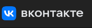
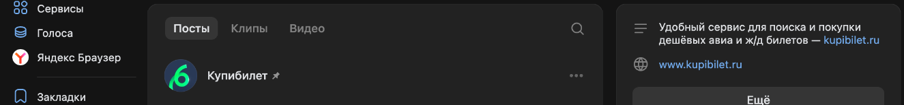
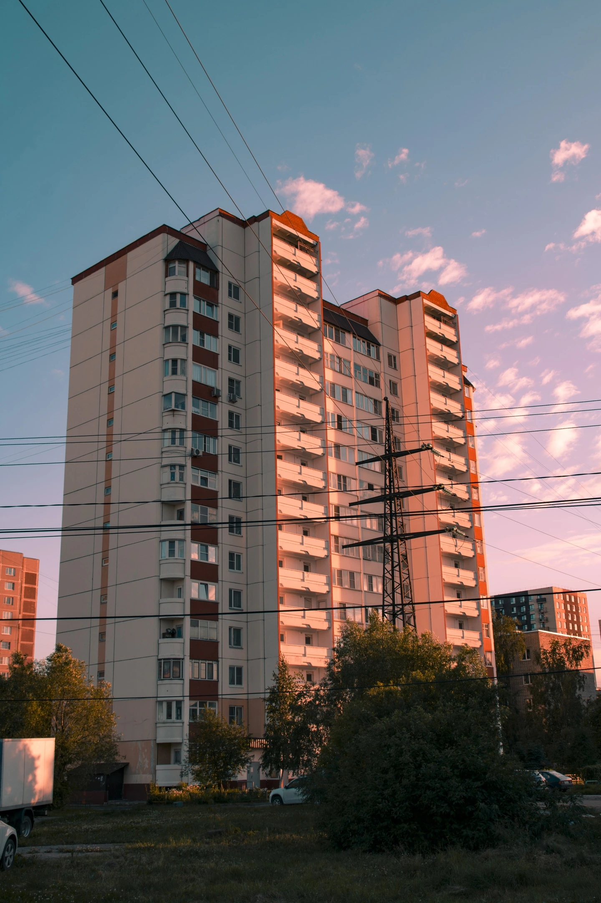
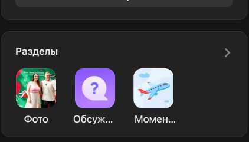

Один вечер в Лобне
Лобня в том свете, в каком я её люблю. Розовое небо отражается в городском пруду у «Москвича», а последние лучи греют стены знакомых домов. Снял несколько кадров по дороге через родные дворы.
- Лайки
- Комментарии
